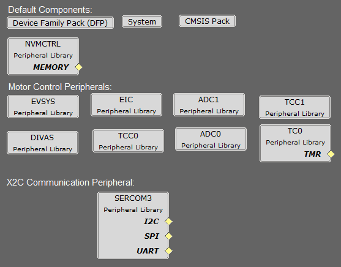

The following project graph shows the MPLAB Harmony components that are included in this application:
pmsm_foc_rolo_sam_c21

Components Used
TCC0:
- Configured to generate 3 pairs of complimentary PWM signals at frequency of 10 kHz in "Dual Slope PWM with interrupt/event when counter = ZERO" a.k.a. "Center Aligned Mode".
- Event output is enabled which is generated when the counter reaches ZERO.
- Dead-time is enabled and set to 1 µs.
- Non-recoverable Fault is enabled on EV0. When an event is detected on EV0, all PWM channels are held low.
ADC0-ADC1:
- ADC0 and ADC1 are setup to operate in Master - Slave mode with ADC0 acting as a Master.
- Both ADCs convert single ended inputs. Phase U current is sampled and converted by ADC0 and Phase V current is sampled and converted by ADC1.
- Both ADCs are hardware triggered simultaneously by an event generated from TCC0 at the end of each PWM cycle.
- Conversion Ready interrupt is generated by ADC0. Since both ADCs are triggered simultaneously and have same resolution and sampling time, both ADCs complete conversion at the same time.
EIC:
- External Interrupt Controller detects hardware over-current fault input and generates a non-recoverable fault event for TCC0, thereby shutting down the PWM in the event of an over-current fault.
EVSYS:
- Event System acts as a traffic cop between event generator and event users.
- Event generated by the TCC0 when the counter reaches ZERO, is used by the ADC0 as a hardware trigger source via Event System.
- Event generated by the EIC upon over-current fault, is used by the TCC0 as a non-recoverable fault event via Event System.
DIVAS:
- This demo uses "Divide and Square Root Accelerator" to perform 32-bit signed and unsigned division and 32-bit unsigned square root operations.
- DIVAS is set to overload "Divide - / " operator i.e. c = a / b; would use DIVAS accelerator for division without using a special API. However, square root operation would still require a special API. Refer to the DIVAS help for more details.
SERCOM3:
- SERCOM3 is configured in USART mode and is set to operate at 115200 bps.
- This USART channel is used by the X2CScope plugin to plot or watch global variables in run-time. Refer to X2C Scope Plugin section for more details on how to install and use X2CScope.